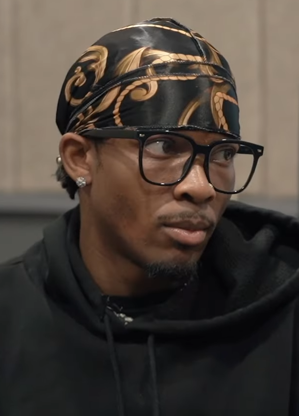

The music industry is no stranger to sudden downfalls, but few have collapsed into the abyss of human horror quite like indie-pop sensation D4vd. Born David Anthony Burke, the 21-year-old singer went from a breakout star at Coachella to a defendant facing a potential death sentence. In a chilling twist of fate, the very action he allegedly took to save his lucrative multi-million-dollar music career—the brutal silencing of a 14-year-old girl—became the exact catalyst that fundamentally destroyed it.
The Clandestine Romance That Fueled a Secret Crisis
Before the headlines turned to murder, David Anthony Burke was an artist on the precipice of global stardom. However, behind the moody, sensitive alt-pop facade lay a highly illegal and toxic reality. According to prosecutors, Burke began a clandestine sexual relationship with an underage fan, Celeste Rivas Hernandez, in 2024 when she was just 13 and he was an 18-year-old adult.
As Burke’s debut studio album neared its highly anticipated April 2025 release, the relationship fractured under extreme stress. Court records from a grueling preliminary hearing revealed that the pair regularly clashed over Burke seeing other women. The tension erupted on April 22, 2025, when Hernandez sent a string of volatile, expletive-laden text messages. "I will end ur career and ur life," she warned, threatening to expose his criminal conduct to her father and the public.
The Fatal Choice to Protect a Career
Fearing that the exposure of child sexual abuse would instantaneously crater his career, Burke allegedly executed a calculated trap. On the night of April 23, 2025, he sent an Uber to pick up Hernandez and bring her directly to his Hollywood Hills home. Her final text message—"girly pop im almost there open your door"—marked her final steps into the house.
According to prosecutors, shortly after she arrived, the teenager was fatally stabbed. In the following days, evidence suggests that measures were taken to conceal the event and preserve a public image. Records presented in court allege that Burke ordered various supplies online, including items typically used for disposal and concealment. Authorities allege that the remains were hidden within his vehicle to avoid detection.
The Ultimate, Tragic Irony
The irony of the situation lies in the timeline of the alleged cover-up. Burke is accused of committing these acts to keep his career spotless just days before a major album release. For several months, his professional life continued; he performed on global stages, including the Montreux Jazz Festival.
Yet, the very vehicle associated with his public persona eventually led to the discovery of the crime. In September 2025, the Tesla was towed to a Hollywood impound lot. Yard workers alerted police to a foul odor coming from the car, leading investigators to find the teenager's remains inside the front trunk.
Burke was formally arrested in April 2026. The attempt to avoid a career-ending scandal resulted in a far more severe downfall. His musical legacy has been largely overshadowed by the legal proceedings and evidence regarding the nature of the relationship and the subsequent violence.
On July 27, 2026, a Los Angeles judge ruled that there was sufficient evidence for Burke to stand trial for murder. Rather than protecting his future, the alleged events permanently altered his public identity from a rising indie-pop star to a defendant in a high-profile criminal case.